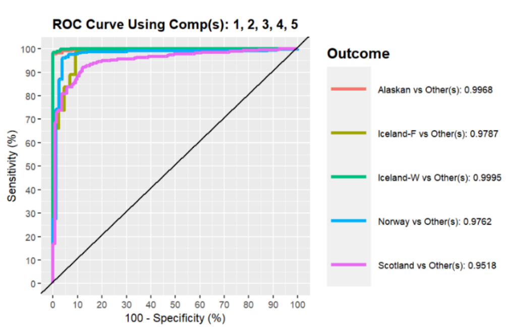

This a project we made on the PLS-DA (Partial Least Squares Discriminant Analysis) technique, a method used to classify data into groups. This approach is particularly helpful when dealing with datasets that have many variables, especially when it is necessary to separate the data into different categories. The technique works by creating latent variables, which are new variables that summarize the most relevant information from the original data. We applied this method in the context of verifying salmon authenticity, as demonstrated below.
Introduction
The objective of our study is to find a predictive model of salmon authenticity on the dataset from the publication “Data fusion and multivariate analysis for food authenticity analysis.” written by Hong, Y., Birse, N., Quinn, B., Li, Y., Jia, W., McCarron, P., … & Elliott, C. T. in 2023. The initial dataset contains information on the 38-element chemical composition of 521 salmon from four different countries. However, elements present in extremely high quantities or too low to be measured accurately were removed from the dataset before further analysis, leaving only 20 chemical elements. Similarly, the values of these elements were normalized on a scale of 0 to 1.
We decided to apply the PLS-DA (Partial Least Squares regression Discriminant Analysis) approach. This method consists in classifying individuals according to the categories of the qualitative variable Y (the origin of the salmon in our study), in a discriminating manner by finding the best possible latent variables, these being combinations of the predictors and the qualitative variable. Moreover, this approach seems particularly interesting in this analysis given that some of the chemical elements (explanatory variables) show strong multicollinearity between them, making multinomial regression inviable. To start our study, we perform a preliminary descriptive analysis to better understand the relationships between the variables and the structure of our dataset. Next, the PLS-DA model will be explored by looking for latent components or variables, with cross-validation to assess the performance of the PLS-DA model. To do this, we first set up a training sample, made up of 80% of our population, and a test sample with the remaining 20% to analyze the quality of the prediction. The model will be considered of good quality if it has a low error rate, i.e. when the majority of salmon rankings are validated.
1. Descriptive analysis
As introduced, descriptive analysis is an essential step prior to any type of work on a database. We begin by projecting a histogram of the dependent qualitative variable “Class”, which indicates the country of origin of each salmon, available in Figure 1. In addition, the origin of these fish is distributed according to the two different production methods.
Figure 1: Salmon by country and production method
Looking at the distribution of this variable, we can see that farmed salmon are the most represented, with the Scottish and Norwegian countries alone recording almost 300 salmon, accompanied by 90 Irish salmon. Wild-caught salmon, represented by Alaska and Ireland, are in the minority, with overall numbers hovering around 150 salmon, or half the number of the other production method.
Next, we find it interesting to understand this distribution through the analysis of chemical elements, which will enable us to highlight the particularities of each country. To do this, we decided to represent the distribution of each chemical element with boxplots in Figure 2.
Figure 2: Statistical distribution of chemical elements
We observe that a group of variables made up of “Al”, “Cr”, “Cu”, “Fe”, “Co”, “Mn”, “Mo”, “Ni”, “Sr” and “V” show very distant points. After analysis, the salmon from the fishery meet these characteristics. Alaskan salmon, for example, are very rich in copper, molybdenum and nickel. Icelandic salmon are also highly concentrated in iron, strontium and vanadium.
Finally, analysis of the relationships between predictors using correlation calculations informs us that a number of variables are strongly positively correlated with each other, such as “Zn” and “Se”, “Se” and “Rb” or “Rb” and “Cs”. This strong collinearity reinforces the use of PLS-DA regression in this study.
2. PLS-DA Model
Before performing the classification, we split the database into a training set, with 80% of all observations, and a test set, with the remaining 20% of observations. First, the PLS-DA model was run on the training set using the MixOmics library. For dimension reduction, we selected the 20 initial components, corresponding to the 20 predictors, which helped us to visualize and identify the most appropriate number of components to minimize the classification error rate while resulting in a parsimonious model. Parsimony suggests that, among models that are equally effective at explaining or predicting data, the one that is simplest or uses the fewest variables is preferred. This translates into the search for models that perform well, but are no more complex than necessary. Model simplicity can help avoid over-fitting, when a model over-fits training data and has difficulty generalizing to new data. Figure 3 shows the classification error rate as a function of the number of components or dimensions. The error rate decreases significantly up to dimension 5, with a value equal to 0.06, then increases slightly and decreases again insignificantly. We would have to enlarge up to component 18 to find an error value smaller than that provided by dimension 5, however, this does not seem appropriate given the relevance of the parsimony criterion.
Figure 3: Classification error rate as a function of the number of components
On the other hand, Figure 4 shows the salmon rankings performed on five dimensions. We can see that only individuals 98 and 25, belonging to Alaskan, failed to group correctly. We can also see that the Norway, Scotland and Iceland-F groups do not have a clear separation, which could mislead the prediction.
Figure 4: PLS-DA on five dimensions
2. Performance evaluation
The test sample was then used to check the model’s performance. The “overall”, “max.dist”, “centroids.dist” and “mahalanobis.dist” metrics are commonly used, with distinct performance measurement methods, to assess the quality of the PLS-DA model in terms of its ability to distinguish different groups. We select the “max.dist” metric as it stands out from the other metrics for its objective of maximizing the separation between classes, which is a key criterion in our study for achieving a clear distinction between them. In addition, in Figure 5 it provides the ideal number of components described above. This distance metric reveals an accuracy rate of 0.95 and an error rate of 0.049.
Similarly, a confusion matrix was run on Table 1 to visualize the distribution of salmon between their initial classes and those predicted by the model. Only one salmon was predicted for Norway and one for Scotland while belonging to the Iceland-F class, and three salmon for Scotland while belonging to Norway. These results confirm the model’s ability to distinguish between classes and its accuracy. This is confirmed by Figure 5, which shows the ROC (Recieving Operating Characteristic) curve. Indeed, all the lines corresponding to the different classes provide information on the quality of the specificity and sensitivity indices, which are very good in view of the very high curves, also indicating AUC values close to 1.
| Alaskan | Iceland-F | Iceland-W | Norway | Scotland | |
|---|---|---|---|---|---|
| Alaskan | 19 | 0 | 0 | 0 | 0 |
| Iceland-F | 0 | 9 | 0 | 1 | 1 |
| Iceland-W | 0 | 0 | 18 | 0 | 0 |
| Norway | 0 | 0 | 0 | 18 | 3 |
| Scotland | 0 | 0 | 0 | 0 | 35 |
Figure 5: ROC Curve

3. The most discriminating and interesting chemical elements to keep
Finally, we identify the important variables for class prediction by studying their weights on all five components.
In Figure 6, we can see that the most discriminating chemical elements, with an error rate of 6%, are, in order of importance, boron, lithium, cadium, carbon monoxide, selenium, iron and caesium.
Figure 6: Variables contribution to components
Conclusion
To conclude, the study consisted in predicting the geographical origin of the salmon in the database using PLS-DA regression. Before applying the prediction model, we carried out a univariate descriptive analysis of our qualitative variable “Class”, which enabled us to observe the distribution of the four countries to be discriminated and to discover which production mode was most represented. We then proceeded with the five-component PLS-DA analysis, built on the training set with the “max.dist” metric. We obtained a high-performance model with good predictive quality, presenting an AUC close to 1 for each group to be discriminated, accompanied by a very low error rate of 4%. The chemical elements that emerged as the most discriminating were lithium, boron, iron, carbon monoxide, selenium, cadmium and cesium. However, class separation was not very clear-cut. Similarly, it would have been interesting to perform a discriminant factor analysis (DFA) to compare and complete our interpretation of the discriminating power of the predictors.